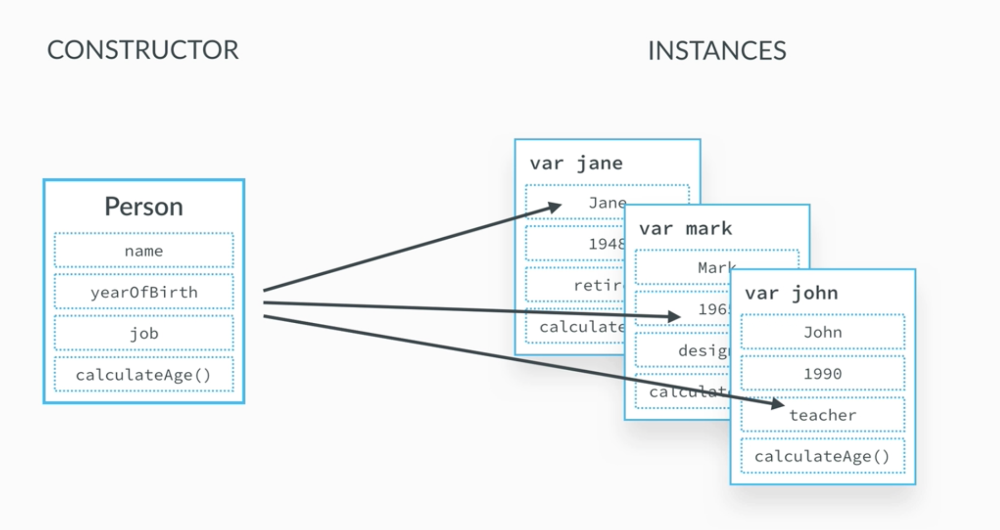
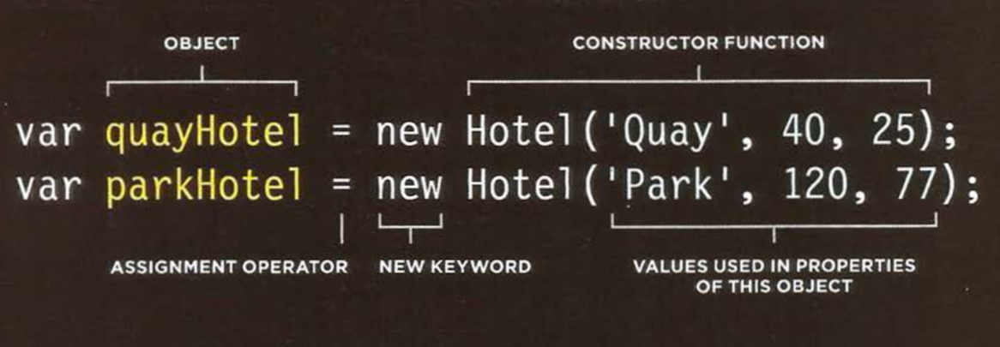

JavaScript


Lecture by Tanja Stojanovska & Bojan Damchevski
© 2022 Seavus Education & Development Center
Lesson Overview
- Javascript Libraries
- JQuery
- Using JQuery
- Differences with Vanilla JS
Looking Back...
- Object is a container with some logical structure
- We use objects to represent real life things
- Objects consist of properties and methods
- Objets can be initialized with {} and new Object()
- We create template functions to create multiple similar objects from one template
Constructor Notation (1)
- When you want several objects to represent similar things you can use a function as a template for creating objects
- Like all functions, it contains statements which are used for adding properties or methods to the object (which end in semicolon)
- The this keyword is used instead of the object name to indicate that the property or method belongs to the object that this function creates
- Constructor function usually begins with a capital letter


Constructor Notation (2)
- You can create instances of the object using the constructor function
- The new keyword followed by a call to the function creates a new object
- The properties of the objects are given as arguments to the function

The 'This' keyword
- Each execution context gets it
- Regular function call: the this keyword points at the global object (which is the window object in the browser)
- Method call: the this keyword points at the object that is calling the method
- The this keyword is not assigned a value until a function where it is defined is actually called
A FUNCTION IN GLOBAL SCOPE (1)
- When a function is created at the top level of a script (that is, not inside another object or function), then it is in the global scope orglobal context
- The default object in this context is the window object. So when this is used inside a function in the global context it refers to the window object
function windowSize() {
let width= this.innerWidth;
let height = this.innerHeight;
return [height, width];
}
A METHOD OF AN OBJECT
- When a function is defined inside an object, it becomes a method. In a method, this refers to the containing object
let shape = {
width: 600,
height: 400,
getArea: function(){
return this.width * this.height;
}
};
FUNCTION EXPRESSION AS METHOD
- If a named function has been defined in global scope, and it is then used as a method of an object, this refers to the object it is contained within
let width = 600;
let shape= {width: 300};
function showWidth() {
console.log(this.width);
}
shape.showWidth = showWidth;
shape.showWidth(); // 300
showWidth(); //600
Exercise 5
Create a student registry form. The form should have:
- First Name
- Last Name
- Age
The form should have a save button which will create a student object and add it to an array (students). Log the array after every save to see the results in the console.
Bonus: Make the students appear in an unordered list in the page.
Exercise 5 Solution(1)
<div style="text-align: center;">
<h1>Student Form</h1>
<div id="studentForm">
First Name: <input type="text">
Last Name: <input type="text">
Age: <input type="text">
<button>Add</button>
</div>
<div id="result1">
<h3>Students:</h3>
<ul style="list-style-position: inside"></ul>
</div>
</div>
Exercise 5 Solution(2)
let students = [];
function Student(first, last, age){
this.firstName = first;
this.lastName = last;
this.age = age;
}
function showStudents(studentsArr, element){
element.innerHTML = "";
for (let student of studentsArr) {
element.innerHTML += `Name: ${student.firstName} ${student.lastName},
Age: ${student.age} `;
}
}
Exercise 5 Solution(3)
let studentForm = document.getElementById("studentForm");
let result = document.getElementById("result1");
studentForm.getElementsByTagName("button")[0].addEventListener("click", function(){
let first = studentForm.children[0].value;
let last = studentForm.children[1].value;
let age = studentForm.children[2].value;
let newStudent = new Student(first, last, age);
students.push(newStudent);
showStudents(students, result.getElementsByTagName("ul")[0]);
studentForm.children[0].value = "";
studentForm.children[1].value = "";
studentForm.children[2].value = "";
});
JavaScript Libraries
Introduction
- Libraries are bundles of pre-written JavaScript code
- We can use a library when we need some already made and ready implementation
- We can use a library to make our development process easier
- We can use a library to test and to monitor our code
How do I know I need a library?
- You have a large feature to implement ( calendar, charts, table generating etc. )
- You are sure that someone already did it really, really good
- You search the internet and find a library
- You read the documentation on how to implement it
- You implement it and live happily ever after
Why not use libraries all the time?
- Libraries are not always well documented
- Libraries can carry a lot of things you don't need
- Libraries can be large and too much libraries can really slow your application down
- Only use libraries when you know the pros outweigh the cons
How to include a library
- Consult with the documentation
- Download the library
- Include the external script / css to your project
- Use the library
- ALTERNATIVELY: Use a CDN(Content Delivery Network) Link
Including a library in project
<html>
<head>
<title> My Page </title>
</head>
<body>
<h1> My awesome page </head>
// When we download the library localy
<script src="/lib/libraryJS/libraryJS.js"></script>
// When we get use it from a CDN
<script src="https://libraryJS.com/libraryJS.js"></script>
</body>
</html>
JQuery
JQuery - A library for developers
- One of the most widely used libraries for JavaScript
- Used for making developers lives easier
- Has a lot of built in functions that developers use often
- Used for making code simple, clear and more organised
- You can identify JQuery by the dollar sign
Some of JQuery benefits
- Easier DOM manipulation and event handling
- Easier toggling classes and styles
- Simpler ways of doing complicated JavaScript functionalities such as AJAX calls
- Required and used by other libraries such as bootstrap
- Huge usage in some frameworks and systems (Ex: ASP.NET, Wordpress )
How to include JQuery
- Open https://jquery.com/download/
- Click on the uncompresed JQuery devlopment version
- Click anywhere and then save as
- Include it in your file
- ALTERNATIVELY: Include it with a CDN link
Including a library in project
<html>
<head>
<title> My JQuery Page </title>
</head>
<body>
<h1> My JQuery page </head>
// Localy
<script src="/lib/jquery-3.3.1.js"></script>
// From a CDN
<script src="https://ajax.googleapis.com/ajax/libs/jquery/3.3.1/jquery.min.js"></script>
</body>
</html>
What's in it?
Selectors
- They are a easier, shorter and simpler to write
- They can do multiple things at once
- They return JQuery array like wrapper object
- We can go through the object with JQuery methods
- Alternatively we can extract the DOM objects from it and work with them instead
An HTML page
<div class="wrapper">
<h1 id="mainTitle">Hey this is my page</h1>
<div class="innerWrapper">
<h3 id="firstTitle">This is some subheader</h3>
<p>Hello!</p>
<p>Yes it is a sub header!</p>
</div>
<div class="innerWrapper">
<h3 id="SecondTitle">This is some other subheader</h3>
<p>Hello again!</p>
<p>Yes it is another sub header!</p>
</div>
<button>It does nothing :(</button>
<input type="text" value="Cool">
</div>
Commonly used selectors
let allElements = $("*"); // gets all elements
let byIdElement = $("#mainTitle"); // gets element by id
let byClassElements = $(".innerWrapper"); // gets elements by class name
let byTagNameElements = $("p"); // gets elements by tag name
let wrapperAndInnerWrapper = $(".wrapper,.innerWrapper"); // gets elements from multiple classes
let firstParagraph = $("p:first"); // gets the first p element
let lastParagraph = $("p:last"); // gets the last p element
let firstChildHeaders = $("h3:first-child"); // gets all the first h3 elements in their parents
let lastChildParagraphs = $("p:last-child"); // gets all the last p elements in their parents
let secondChildParagraphs = $("p:nth-child(2)"); // gets all the second place p elements in their parents
Difference between vanilla JS and JQuery
let byIdElement = document.getElementById("mainTitle");
let byIdElement = $("#mainTitle");
let byClassElements = document.getElementsByClassName("innerWrapper");
let byClassElements = $(".innerWrapper");
let byTagNameElements = document.getElementsByTagName("p");
let byTagNameElements = $("p");
JQuery objects and DOM objects
- They will not give you the same methods to call
- JQuery objects use their methods for doing things
- DOM objects use normal JavaScript methods for doing things
- We can extract DOM objects from JQuery objects any time
JQuery and DOM selecting
// Get first and last element from JQuery array
allElements.first();
allElements.last();
// Find elements in JQuery array
allElements.find(".wrapper").find("p").last();
// Get DOM element from JQuery array
allElements[0];
allElements.get(0);
// Get all DOM elements from a JQuery array
byClassElements.get();
// Get next or previous element
firstParagraph.next();
firstParagraph.prev();
Difference between vanilla JS and JQuery
document.getElementsByTagName("input")[0].value;
$("input").first().val();
document.getElementsByClassName("header")[0].innerHTML;
$(".header").first().html();// get innerHTML
document.getElementsByClassName("header")[0].innerText = "hey";
$(".header").first().text("hey");
document.getElementsByClassName("header")[0].style.color = "red";
$(".header").first().css("color", "red");
HOMEWORK Part 1
Create a zoo
- Create different animal objects. Each one of them needs to contain name, type and age.
- Create a form for entering name, type and age. Add a button. On click create an animal object and add it to an array
- Print the animals in an ul list.
HOMEWORK Part 2
- Create two inputs, one for text and one for color in your HTML page
- Get the inputs using jquery
- Create an h3 element in your HTML page
- Change the text of the h3 via jquery
- Create a div element in your HTML page
- Enter its html via jquery